Visual Studio Online 的功能強大，權限設定也很複雜，
加上分處各地，這次有機會就來好好地釐清一下。
首先，權限大致上分成幾大類
- Project
- Version Control
- Git 分支
- Areas
- Build and Release
- Wiki
Project
第一個 Project 控制使用者是不是可以登入 VSO 網站，
這是最主要的一個權限，沒設定就連登入都不行。
在最外層專案頁面，選擇選項裡的 Users
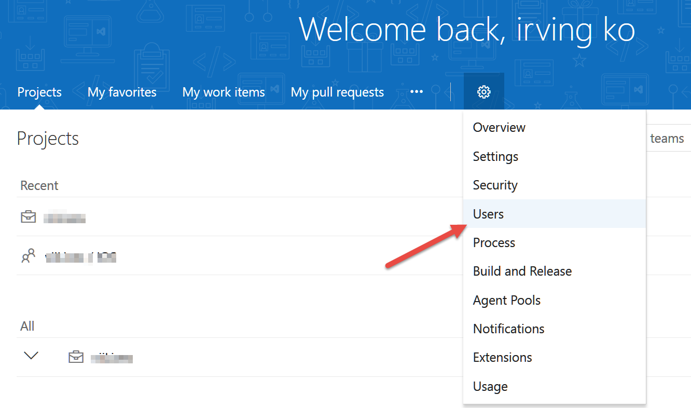
進入後如下圖
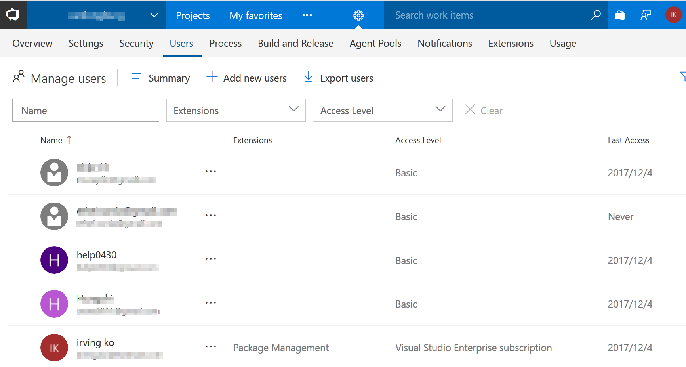
這邊可以設定此帳號的主要權限(Access Level)，預設有五個免費 Basic 可以使用，
想要操作VSO網站，必須是 Basic 或是有 Visual Studio Subscription 權限，Stakeholder 就只能看。
這邊的 help0430 就是我們新加入的成員。
加完使用者後，接著設定每一項功能的權限，
點選Security(1)，你會看到左邊很多 group(2)
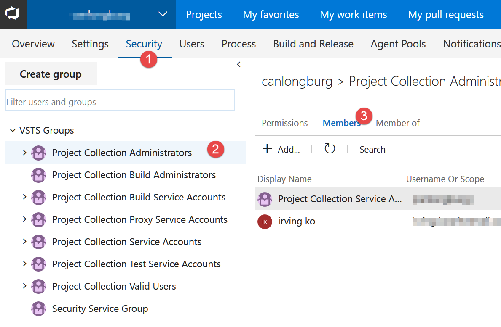
如果剛好有你喜歡的，可以直接加入(3)
但通常我會在team的地方設定
左上角切換到你的Team(1)，然後選擇設定(2)裡的 Security(3)
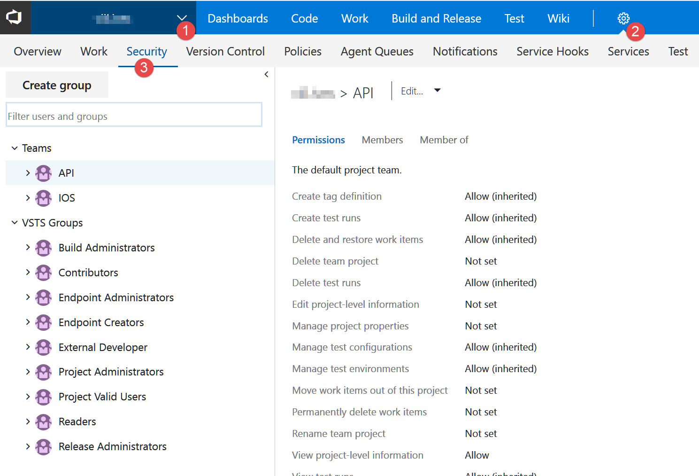
VSO 讓人困惑的地方就是你身處不同的階層，設定的內容就會不一樣，所以要很清楚知道自己在哪裡。
這邊我有兩個 Team，分別是開發後端 API 和 IOS APP。
目前畫面停留在 API Team 的權限 Group，可以看到右邊的權限有建立 Tag、Test、刪除 Project 等等權限，
這邊是設定一個權限群組，以後在這個群組裡的使用者都會繼承這些權限。
選擇 Members 就可以看到有哪些使用者在這個群組了。
你也可以點選 Create group，自己新增權限群組，像我就設定一個外包專用的群組 External Developer
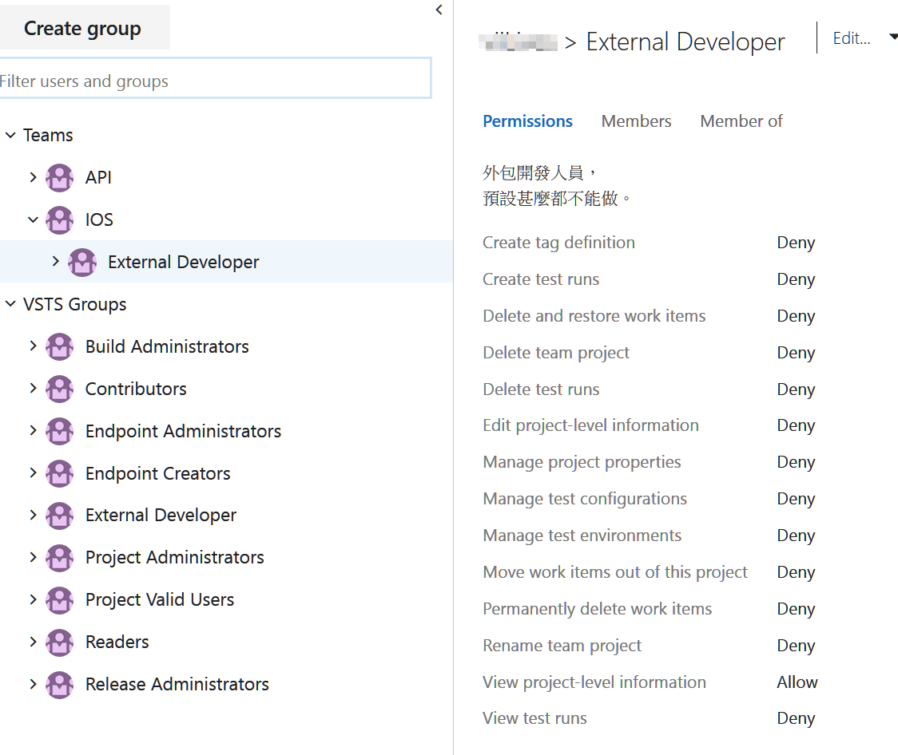
預設甚麼東西都不能用，只有 view project-level information 的權限，
到此你增加了一個可以登入 VSO 看看的使用者，再來就是每個大項功能的權限設定。
這邊我有把 help0430 加入到 VSTS Groups 內。
Version Control
選擇旁邊的 Version Control，設定使用者對於版本控管的權限
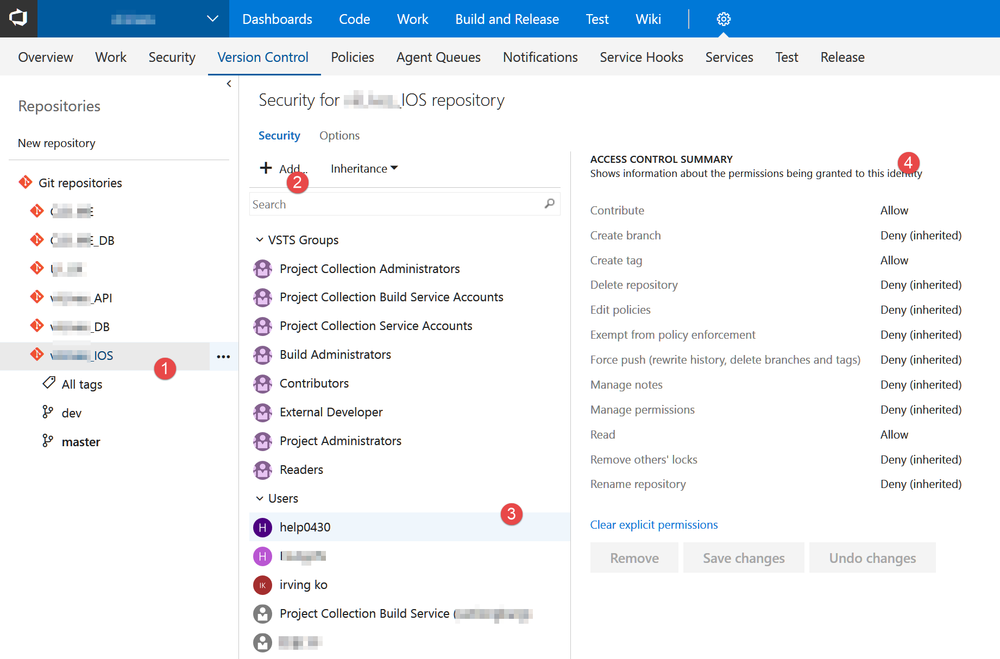
上圖可以看出來我有很多個 Repository，其中我們來看看 IOS (1)那個，
你可以點 Add(2) 來增加使用者，點選使用者(3)可以看到他的權限(4)，
這邊可以設定上傳檔案、開分支、開 Tag 等等的權限 。
另外，仔細看一下 VSTS Group 裡面，也要把 External Developer 加入，並且設定預設值，
這樣 help0430 才有預設的權限。
Git 分支
如果是使用 git 當版控的話，還可以對分支做權限控管，如下圖
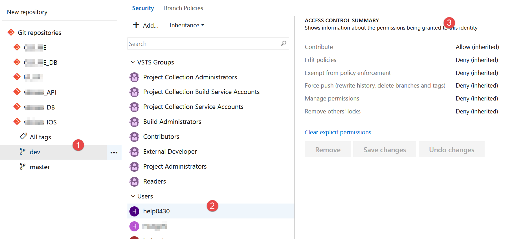
這邊可以決定 help0430 是否有權限對分支做些事情。
記得，上面的 VSTS Groups 也要加入 External Developer
Areas
跟著圖片點
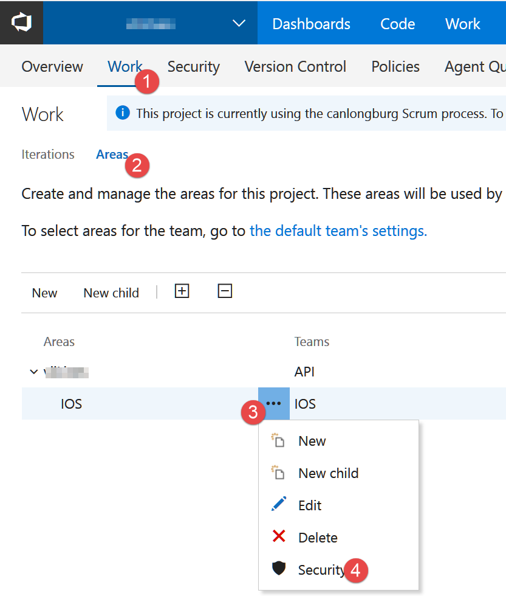
特別注意 IOS 隸屬於主要專案下，也就是 API Team 屬於主要專案， IOS Team 低了一階，等等會提到這個差別。
點出來的權限可以設定 Backlog 那裡到底可以做甚麼，
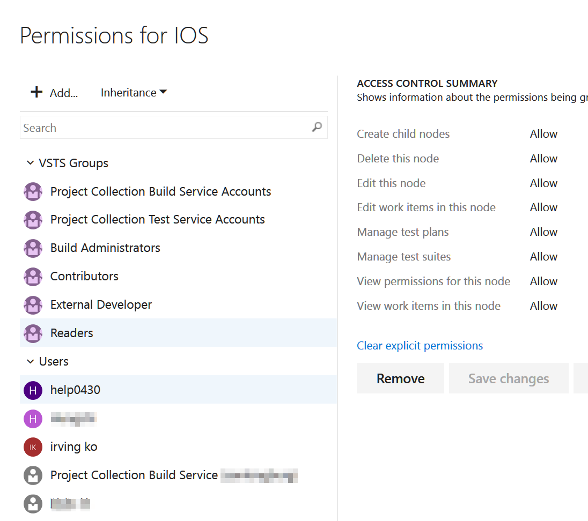
上圖設定的是 ios team 的成員的權限，一樣要把 External Developer 加入到 VSTS Groups
這邊有一點要注意，Area 和 iterations 是不一樣的，
雖然 VSO 在開 iterations 的時候會預設問你要不要也增加 Area，但是兩邊意義不同。
Area 可以控制的是 VSO 網頁上的 Backlog，可不可以開 Backlog，看 Work item 等等，
而 iterations 那邊的權限是對 Sprint 的管理。
所以像我的專案 IOS Backlog 部分
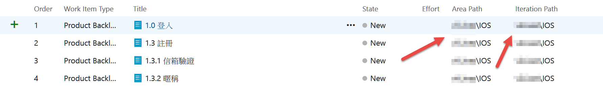
Area 和 Iterations 路徑一樣，但 API Team 的部分就不同了，
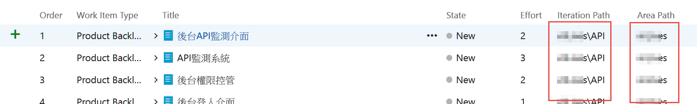
所以以上說明都是針對主要專案底下的IOS這個 area 是不是有權限可以控制，
Build and Release
在來看看CI和CD的設定權限
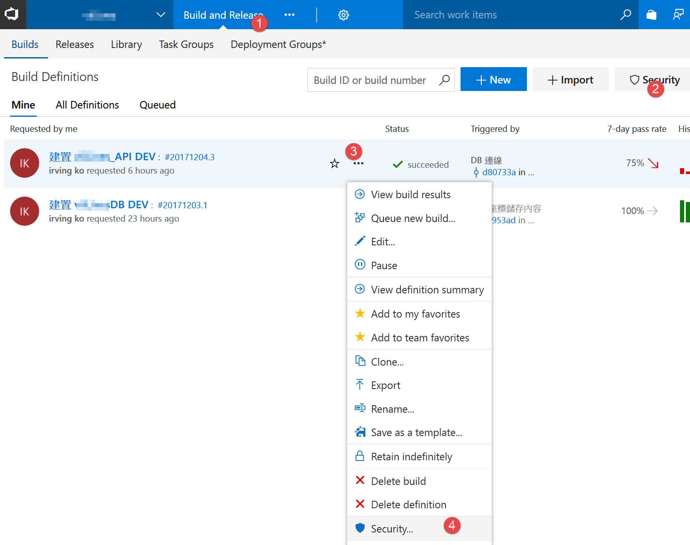
選擇 Build and Release (1)，這邊有兩個地方可以設定，
一是點選右邊 Security(2)對全部建置做設定，
或是針對單一建置做設定(3)(4)，
一樣別忘了吧 External Developer 加入群組。
Wiki
如下圖
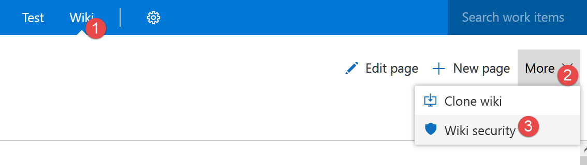
一樣可以設定是否可以看或寫或刪除之類的權限。
以上就是目前 VSO 可以設定權限的地方。